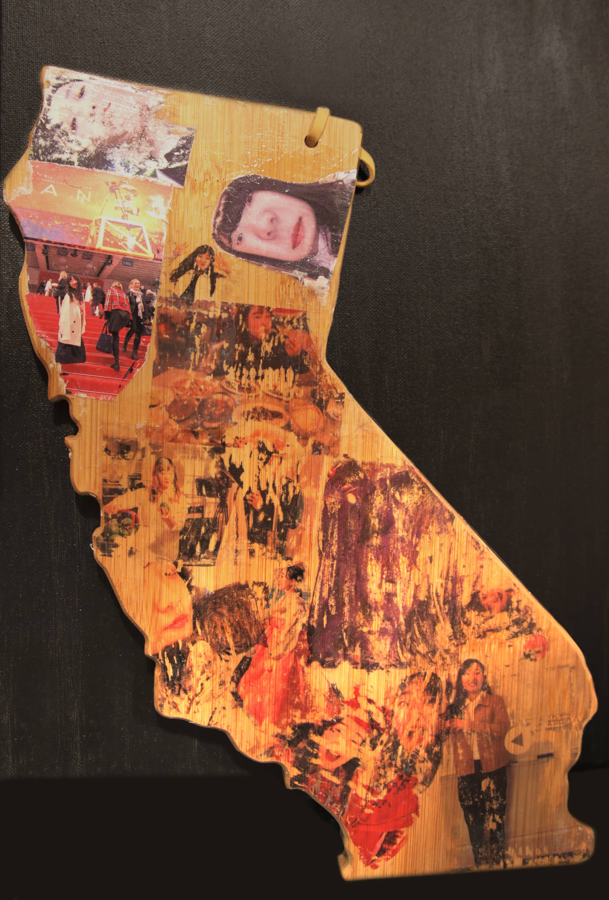

"Welcoming," 2020
Medium: Projection mapping video on the shadow box and color wire object
Description:
This is a public art project of making a San Jose monument.
I do not want to exclude anyone or feel excluded from my art. I hoped I could invite anyone in public and feel welcomed.
Therefore, I made a welcoming hand with colorful wires to invite people.
In addition, I filmed San Jose downtown, and did projection mapping on the shadow box for three dimensional effect.
This year is my first year living in San Jose.
I felt San Jose is open-minded, consisted of various ethnicities, and welcoming.
The city does not welcome individuals and “does not care.” I think that is the most important thing.
Even though people do not care or are interested in who I am, strangely I feel "welcoming."
There is no awkwardness to being here as a new resident.
All different people shows no discrimination, no attention to minorities, but with warm hearts.
I want to express this weird warmth feeling from this city with hands, and also want to include everyone.
"Daydream," 2020
Medium: Adobe Premiere Pro, Photoshop
Description:
The digital media enable people to mess with the reality. Photoshop, Premiere pro with
green screen make everything happens. Therefore, I used green screen and “ultra key”
effect from Premiere pro to travel around the world that cannot be happened today.
Inspired by the movie, “Inception.” I try to content the dreams I dream right before the “kick.”
(In the movie, people need to have a strong physical kick to wake up from dream.)
All shots created in my tiny room, and footages are the places I wanted to go.
The places are sometimes abstract and real. While you are dreaming, it feels real but surreal. I wanted to express that mishmash dream.
In the video, I travel Korea, Bali, Bahamas, museum and Henri Matisse’s room,
and I ride a rollercoaster and F1 car at Monaco GP. All I dream about.
My flight back to home country for the summer got cancelled this week,
and there are news that Trupm will suspend OPT program soon, which will change my whole education and life plan
(OPT: Optional Practical Training which allows international student to legally work for years after graduation).
In this chaotic situation, I just wanted to close my eyes for minutes and have a
daydream. This project was made for me as a breakthrough, and experiment for green
screen. Later, I want do more creative works and want to make more ridiculous videos with green screen.
"Me On The Cutting Board_stopmotion," 2020
Medium: Digital Photo transfer on the cutting board and Video(stop motion)
Description:
There is a phrase, "you are on the people's cutting board," in Korea, which means you are the target
from people to talk about, criticize about or pick on. As an international student, as a woman who has an opinion,
and as an artist, most of the time I am the one who is on people's cutting boards.
They are so ready judge me whenever they got bored from their lives.
Cutting photos of me taken from California, and the action of "cutting" represents how people criticize on me
by my personality, my friendship, my education, my lifestyle, and my success.
To express the remaining stuff(smell or color) from cutting fruit or vegetables on the cutting board,
I spreaded gel medium on the cutting board, and put a photo print on top, then ripped it off.
Thus, only ink remains on the cutting board. This method is called digital photo transfer.
I tried to explore alternative process photography. In addition, I made a stop motion video to add more to the project.

Me on the cutting board, 2020, image tranfer alternative process photography on the cutting board.
"Polaris," 2020
Medium: Full HD Color Video, Max, 00"00"55
Description:
I find my way by looking up my own Polaris.
Inspired from one of my favorite poems, "The Night I Count the Stars" by Korean poet, Dong-ju Yoon.
"...
To a star memory
To a star love
To a star loneliness
To a star yearning
To a star poem
To a star mother, mother
Mother, I whisper a beautiful word to a star.
.
.
.
They are too far away.
As far as the stars
..."
"Blue Bird," 2020
Medium: Photoshop, Premiere, Max msp, Blippar
Description:
In many countries, the blue bird is a symbol of happiness, joy, and enlightenment.
“Bluebirds are always a symbol of something good that is about to come into your life (Dreaming and Sleeping).”
Also, there is a song in Korea, Bluebird by Lee Moon-sae, which is about letting
your loved ones go if you love them. Even though you love the bird, the bird would be happier
if they could “fly.” My mom said that blue bird reminds her daughter, me, because my mom had to let me go to support my dream.
However, the blue bird means a lot to me, and in this pandemic time,
it is the time we need to think about a hopeful subject.
Therefore, I created a blue bird hanging out on the leaf that has a colorful
glitch-ish video in it. I used Max2 and Touch designer to make that video.
If you touch the ball shape, it leads to Vimeo.
And when you touch 삐릿삐릿 파랑새(lyrics of the song), it gives you youtube video of
Blue bird, song by Lee Moon-sae.
-쉼 means "taking a break."
-삐릿삐릿 파랑새 is my favorite lyric from that Blue bird song.
"Video Presentation Flow: Past VS Present," 2020
Description:
"...video was initially used as a handy and low-cost tool to document live
performances that had no mobility or permanence, thereby making these forms transportable and more accessible to audiences beyond the original site of presentation." (Busting the Tube: A Brief History of Video Art)
In 2020, if the video is boring, people start to look up different video immediately,
unlike 1960s or 1970s. Wanted to show how we differently see the video art, and
how we differently present to the audience in different flow depending on the
period(ex. one-take shot vs fast transition).